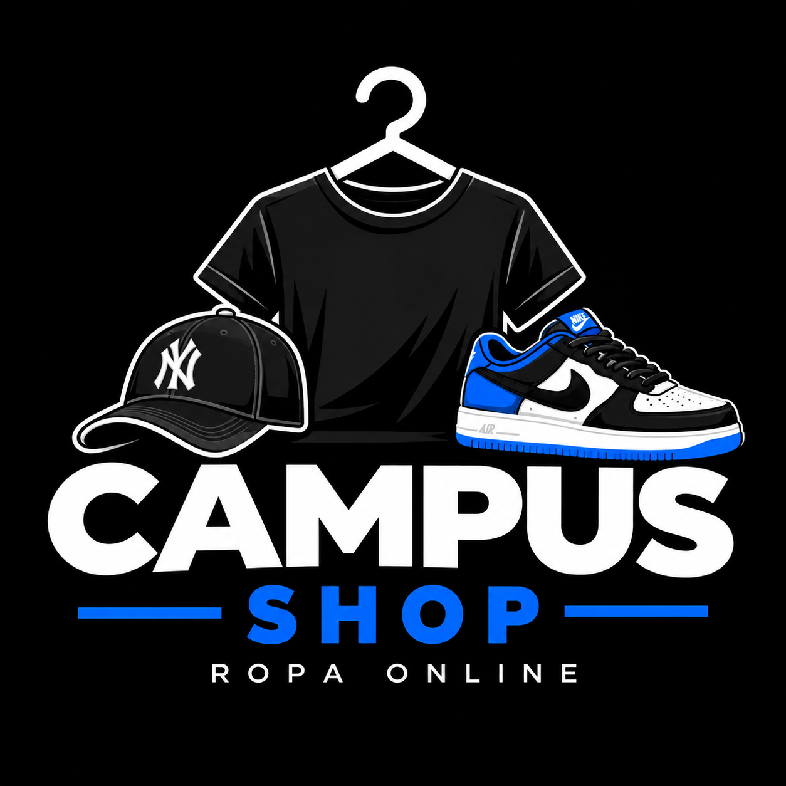

Desarrollo
"Actualmente me enfoco de la lógica de las aplicaciones. Desarrollo la parte del 'backend' y las APIs REST."
Baja para recorrer el espacio.
Estoy en proceso de convertirme en técnico en desarrollo de software. Me gusta entender cómo funcionan las cosas desde cero y practicar construyendo proyectos que resuelvan problemas reales.
Pasa el cursor (o toca) un nodo para ver cómo lo uso.
Haz clic en un panel para abrirlo.
¿Tienes una idea, una oportunidad o quieres colaborar? Escríbeme por cualquiera de estos medios.
Desarrollador |
Joven apasionado por la tecnología, en formación como Técnico en Desarrollo de Software. Construyo sitios web modernos y aprendo creando proyectos reales.

Estoy en proceso de convertirme en técnico en desarrollo de software. Me gusta entender cómo funcionan las cosas desde cero y practicar construyendo proyectos que resuelvan problemas reales.
"Actualmente me enfoco de la lógica de las aplicaciones. Desarrollo la parte del 'backend' y las APIs REST."
Convertirme en un desarrollador full stack y aportar valor a un equipo de trabajo.
"Me mantengo en constante aprendizaje creando y formando parte de proyectos desde cero y aplicando buenas prácticas de control de versiones."
Mi stack como un mapa: pasa el cursor (o toca) un nodo para ver qué hago con cada tecnología.
Una mini página interactiva que consume una API de recetas.
 02
02
Sistema para la gestión de un parqueo.
 03
03
Página web para la venta de ropa construida con tecnologías web.

04Ramas, commits y merge en un repositorio grupal: cada integrante crea su rama, se revisa y, si cumple las métricas, pasa a producción.
 05
05
Este portafolio, hecho con tecnologías web puras.
Publicación de mi portafolio en GitHub con HTML, CSS y JavaScript.
Aprendiendo desarrollo front-end, back-end y buenas prácticas.
Sistema de Gestion de Gimnasio CLI, API REST para Gestión de Películas, con control de versiones en GitHub.
¿Tienes una idea, una oportunidad o quieres colaborar? Escríbeme por cualquiera de estos medios.